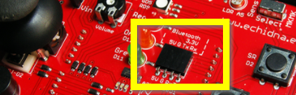
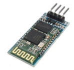
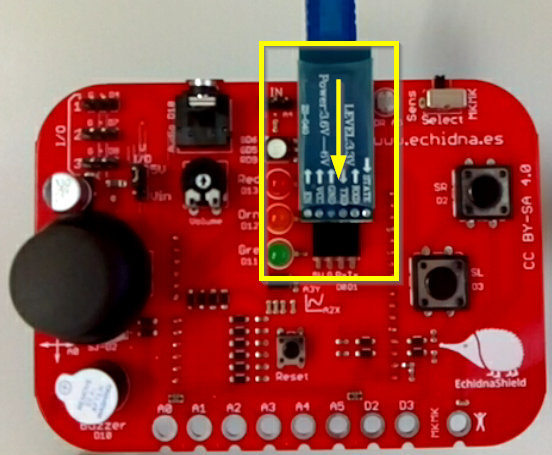
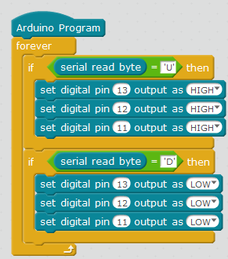

5.1 MONTAJE 13 ENCENDER CON EL MÓVIL Bluetooth
ATENCION: MUY DIFICIL
5.1.1 Módulo HC-06
Echidna tiene un conector preparado para conectar un módulo de Bluetooth

Nosotros utilizaremos un JY-MCU o HC-06 muy común y barato. .

Te recomendamos estas páginas:
Para conectar el HC-06 lo hacemos hacia abajo de modo que coincida los pines:
| Pines del HC-06 | Pines del Echidna | Pines del Arduino |
|---|---|---|
| Vcc | 5V | 5V |
| GND | GND | GND |
| RX | TX | D1 |
| TX | RX | D0 |

Nosotros vamos a utilizar la APP BlueControl:

5.1.2 Problema número 1: ocupamos el puerto serie
Si has leído Cómo se comunica con un Arduino habrás visto que ocupamos LOS MISMOS PINES D0 Y D1 QUE UTILIZA EL ARDUINO PARA COMUNICARSE POR EL PUERTO SERIE CON EL ORDENADOR.
Esto crea un problema: No se puede tener conectado el HC-06 mientras nos comunicamos el ordenador con el Arduino.
Solución: Pues quítalo, y luego cuando acabes de descargar el programa en el Arduino, pues lo pones.
Bah!! ¿sólo era eso? pues no, que nos ocupe el puerto serie nos fastidia: ¿puedes interaccionar con el Sprite? por ejemplo ¿puedes hacer que el oso panda de mBlock se mueva según el mando de BlueControl?...NO
5.1.3 Problema 2 la velocidad del puerto es elevada
Al programar con mBlock fija la velocidad del puerto serie a 115200 baudios, y nuestro HC-06 soporta 9600
Solución: Bajarlo manualmente, un rollo, tenemos que salir de mBlock, editarlo en Arduino IDE .... esto se ve mejor en el ejemplo siguiente.
5.1.4 Reto: Encendido y apagado de LEDs con el móvil
Vamos a ejecutar este pequeño programa, que al apretar el botón de arriba se encienden los leds y al apretar el de abajo se apagan:

Primero hay que vincular el móvil con la APP
Segundo hay que subir el programa solucionando los problemas anteriores
Mejor verlo con esta presentación:
O sea, ya podemos jugar con el móvil y con nuestro Echidna !!!
Por ejemplo.. se podría hacer un coche teledirigido, el programa lo tienes en el repositorio: https://github.com/JavierQuintana/Echidna y el vídeo en el muro